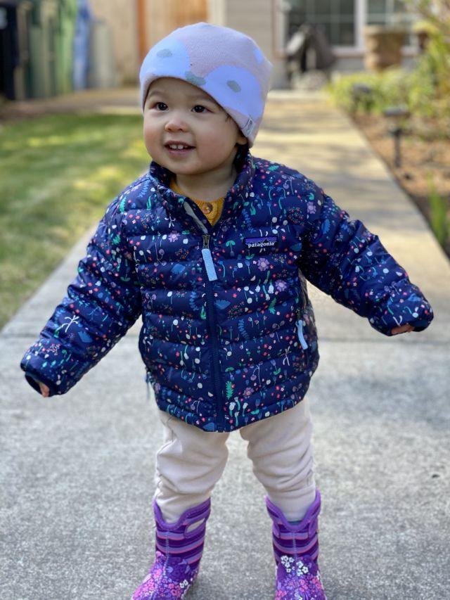

Sent April 9th, 2020
I wrote a poem for Amelia:
The sun still rises
Applesauce all over your face
This is where we are
The new normal has started to feel...normal.
We are all still healthy. We have a comfortable amount of food, and most importantly, plenty of toilet paper.
Although we all greatly miss getting to leave the house, this challenge that we face has taught us a great many things:
There is a new appreciation for the food we have. Not just because we have to cook it ourselves, but because of the awareness it calls to the people and businesses it brings to us. I can't recall a time previously where I thought much about the grocery store worker when looking through our pantry. Or the local coffee bean roaster that provided the coffee. Or the local dairy farmer that produced the milk. All people who still have to go to work. Suddenly every purchase feels like weighing the scale between reckless consumption and a need to support the businesses and workers around us.
As a corollary to the above, our waste of food is down to almost nothing. Most meal-preps begin with looking at the refrigerator and seeing what is the closest to expiring. (Almost) no food gets left behind.
After-lunch naps are a wonderful thing and I will miss them dearly when I go back to working in an office. I've been taking naps with Amelia after we both eat lunch; she seems to sleep better when there is someone napping in the same room. I don't know why this is a thing people stop doing in this culture when we get older.
As we've become bored of walking the few blocks around our house every day, we started taking field trips to other neighborhoods and walking around those blocks instead. While the parks feel crowded in a way that is a bit off putting under the circumstances, small neighborhood streets remain empty in a way that invites exploration. Maybe we will find the next neighborhood we want to try living in.
Anyways, we're getting through it. She doesn't seem to mind so much.
